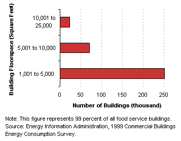

| |
|
Characteristics
by Activity...
Food Service
|
Food service buildings are those used for preparation and sale of food and
beverages for consumption.
Basic
Characteristics
[ See also: Equipment | Activity
Subcategories | Energy Use
]
| Food
Service Buildings...
- An overwhelming majority (72 percent) of food
service buildings were small buildings (1,001 to 5,000 square
feet).
Tables:
|
|
Number of Food Service Buildings by Predominant
Building Size Categories
 |
Equipment
Table: Buildings,
Size, and Age Data by Equipment Types
Predominant
Heating Equipment Types in Food Service Buildings
Predominant
Cooling Equipment Types in Food Service Buildings
Top
Activity
Subcategories
Building
respondents who reported that their building was a food service building
were only asked whether the building was a restaurant, bar, fast food chain,
or cafeteria (all the same category) or some other type of food service
building. Ninety-nine percent of food service buildings fell into this first
category, so there is no subcategory information to report.
Top
Energy
Use
Food
service buildings used 447 trillion Btu of site energy, which was
8 percent of the total energy consumption for all commercial buildings,
but comprised only 3 percent of all commercial floorspace. Their total
energy intensity was the highest of all the building types, as was
their natural gas intensity; their electricity intensity was the second
highest.
|
|
Tables:
Reference: What is a
Btu?
|
|
Energy
Consumption in Food Service Buildings by
Energy Source
|
The
total energy consumption data in the figures and tables above are “site
energy,” which includes only the amount of electricity consumed within
the building; energy use can also be expressed as “primary energy,”
which includes the energy consumed during the generation and transmission
of electricity. Food service
buildings used 653 trillion Btu of primary electricity, so their total primary
energy consumption was 883 trillion Btu, or 7 percent of total primary consumption
for all commercial buildings.
Top
Specific questions may be directed to:
Joelle Michaels
joelle.michaels@eia.doe.gov
CBECS Manager
Release date: July 24, 2002
Page last modified:
May 4, 2009 2:52 PM
http://www.eia.gov/consumption/commercial/data/archive/cbecs/pba99/foodservice/foodservice.html
If you are having any technical problems with this
site, please contact the EIA webmaster at wmaster@eia.doe.gov. |